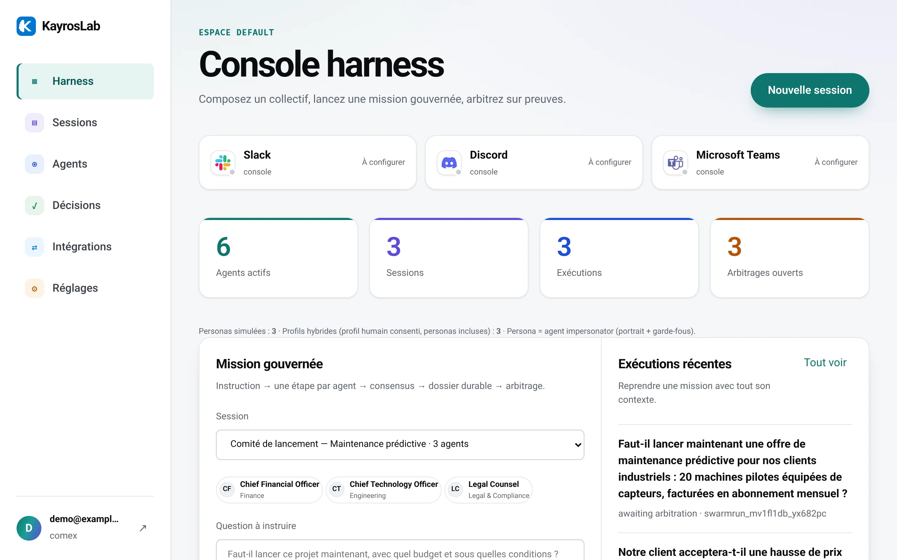
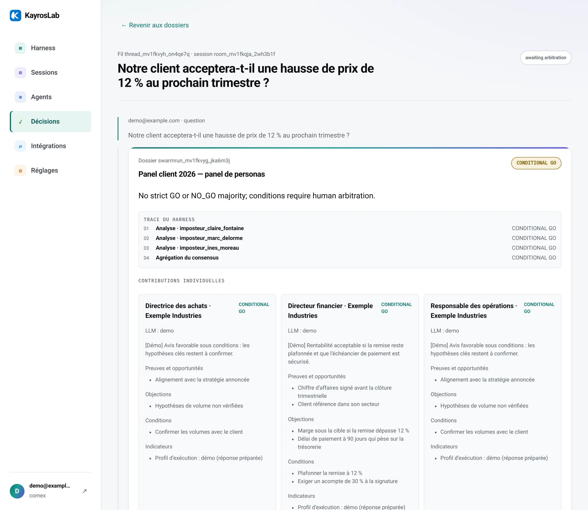

Avant d'engager un budget, des recrutements ou une réponse client — faites passer la décision par des agents spécialisés aux devoirs opposés. Ils instruisent les preuves, challengent les hypothèses et consolident les objections en un verdict. Vous restez responsable.
Plus de clarté, moins d'angles morts. Arbitrage humain sur chaque verdict sensible — en local ou dans le cloud.

KayrosLab est conçu pour le moment où une décision doit passer de la conversation à l'engagement — avec preuves, objections et responsabilité attachées.
Transformez une question stratégique floue en dossier structuré en une session — affirmations, sources et fourchettes côte à côte.
Finance, juridique, ingénierie, ventes et plus débattent depuis leur devoir — pas depuis une seule voix de modèle qui vous donne raison.
Les objections red-team et les droits de veto arrivent tôt, pour que les surprises apparaissent en répétition — pas après la signature.
Chaîne de raisonnement inspectable, consciente de la conformité. Les prévisions restent des fourchettes ; les verdicts restent consultatifs jusqu'à votre décision.
Un parcours gouverné qui couvre rôles, délibération, chiffres et contrôle humain — pour les dirigeants et les équipes qui les soutiennent.
GO, GO conditionnel ou NO-GO — avec conditions, objections et une porte humaine avant toute action.
Composez un comité qui instruit, argumente et réconcilie — finance vs croissance, juridique vs vitesse, ingénierie vs promesse.
Chiffres issus d'hypothèses explicites, scénarios réouvrables, et un narratif exécutif prêt pour le prochain comité de pilotage.
Lancez des missions depuis la console ou depuis Salesforce, et apportez la même délibération gouvernée dans Slack, Microsoft Teams et Discord.
Les réunions compressent l'incertitude en opinions ; la voix la plus forte l'emporte. KayrosLab garde affirmations, sources, chiffres et objections inspectables jusqu'à l'engagement.
Preuves et conditions satisfaites. L'humain responsable accepte et passe à l'exécution.
Il reste des frictions : preuve manquante ou objection ouverte. La décision ne passe qu'avec des conditions attachées.
Un détenteur de veto bloque. Le dossier consigne l'objection et la justification — réouvrable quand les preuves changent.
Le vote instruit · le veto décide. Le verdict ne prime jamais sur la gouvernance : il reste consultatif tant qu'un humain n'accepte pas, n'attache pas de conditions, ou ne passe pas outre un veto.
Pas besoin d'apprendre un framework d'agents. Énoncez la décision, laissez le comité travailler, puis arbitrez preuves en main.
Décrivez la vraie décision — lancement, embauche, offre, pivot — avec le contexte et les contraintes qui comptent.
Assignez des rôles métier opposés pour que chaque agent instruise depuis un devoir, pas depuis un persona de chat générique.
Les agents rassemblent les preuves, attaquent les hypothèses faibles et plient les objections dans un dossier structuré.
Acceptez, attachez des conditions, ou honorez un veto. Chaque étape est enregistrée pour la revue suivante.
Partez de packs de rôles — CFO, CTO, DRH / RH, Juridique, Ventes — chacun encodant les enjeux et réflexes de veto typiques de la fonction. Ou allez plus loin avec un import de profil réel consenti ci-dessous.
Met sous tension l'économie unitaire, le timing de trésorerie et les fourchettes avant que l'optimisme ne devienne un plan.
Signale consentement, responsabilité et frictions de conformité tant qu'il est encore temps de redessiner la demande.
Challenge faisabilité, dépendances et risque de livraison pour que les engagements clients restent honnêtes.
Répète les objections acheteur, les évaluateurs RFP et le narratif qui doit survivre au premier appel.
Cartographie alternatives et effets de second ordre pour que le comité ne se verrouille pas sur la première idée.
Avocat du diable et red team forcent des modes de défaillance non évidents dans le dossier — avant le réel.
Les packs de rôles génériques vous donnent des devoirs institutionnels. L’import optionnel et consenti d’un profil CrystalKnows place le style de communication d’une vraie partie prenante dans la répétition — comme mise à l’épreuve, toujours étiquetée Simulation.
Composez un comité à partir de packs qui encodent ce qu’un CFO, un CTO, un DRH, un conseil juridique ou un responsable commercial protège, challenge et peut vetoer — sans prétendre être une personne nommée.
Devoir institutionnel · enjeux opposés · prêt en une session.
Lorsque vous disposez d’un profil de personnalité CrystalKnows autorisé et consenti, importez-le sur un agent hybride ou personnifié. La répétition s’appuie sur préférences de communication, déclencheurs et patterns d’objection pour éprouver la mission — jamais comme citation, endorsement ou prédiction comportementale.
Optionnel sur les offres éligibles. Import officiel ou export autorisé seulement — pas de scraping. Aide à la répétition, pas une boule de cristal.
À voir dans la console → Sales Oracle & panel de parties prenantes
Démarrez en libre-service dans la console, ou apportez la même délibération gouvernée dans les canaux que vos opérateurs utilisent au quotidien.
Espace en libre-service : connectez un canal, composez un collectif, posez la vraie question, arbitrez le verdict.
Éprouvez propositions et RFP contre un panel de parties prenantes simulé — toujours étiqueté simulation, jamais comme une vraie citation.
Vous construisez des agents ou intégrez le moteur ? Pour les équipes techniques →
Dès qu'une opportunité atteint l'étape Proposal, un collectif d'agents finance, juridique et technique l'instruit. Vos commerciaux retrouvent le verdict, les risques et les conditions dans l'activité de l'opportunité — et la décision finale reste humaine.
Risque : clause de réversibilité absente.
Condition : valider l'annexe sécurité avant signature.
Dossier complet et arbitrage →Arbitré par un humain dans la console, conditions attachées.
Elle atteint l'étape déclencheuse — Proposal/Price Quote par défaut, paramétrable.
n8n ou Zapier lance une mission sur votre collectif — une seule revue par opportunité et par étape.
Tâche « Verdict » : GO, CONDITIONAL GO ou NO GO, score, risques, conditions et lien vers le dossier.
Votre arbitrage dans la console revient en tâche « Décision » sur l'opportunité.
Deux workflows prêts à importer, sans toucher au modèle de données Salesforce.
Chaque échange est authentifié, signé, et peut être rejoué sans créer de doublon.
Une question posée dans Slack, Teams ou Discord part au collectif, qui répond dans le canal. Vos décideurs approuvent, demandent une révision ou refusent d'un clic — avec la même traçabilité que dans la console.
@KayrosLab faut-il renouveler Exemple SA aux conditions proposées ?
Arbitrage requis — Renouvellement Exemple SA
Quel est l'avis du collectif sur le renouvellement Exemple SA ?
Arbitrage requis — Renouvellement Exemple SA
/kayros question : on engage l'offre Exemple SA ?
Arbitrage requis — Renouvellement Exemple SA
/kayros et votre question, dans n'importe quel salon du serveur.Illustrations — conversations fictives. Refuser ou réviser ouvre toujours un formulaire de motif.
Dans Réglages : OAuth Slack, consentement administrateur Teams, invitation du bot Discord. Secrets chiffrés côté serveur, test de connexion inclus.
Les droits viennent du compte KayrosLab lié par jeton à usage unique — être administrateur du chat ne donne aucun droit d'arbitrage.
Signature HMAC pour Slack, jeton JWT du Bot Framework pour Teams, signature Ed25519 pour Discord, anti-rejeu au-delà de 5 minutes.
Refuser ou réviser exige un motif, horodaté et conservé dans l'audit. Un double-clic sur « Approuver » n'arbitre jamais deux fois.
Le chat accélère, la console reste la référence. Tout reste faisable dans la console, et un canal indisponible ne bloque jamais le processus.
Connecter un canalCombinez un pack de rôle (CFO, CTO, Juridique…) avec un profil de partie prenante optionnel et consenti — y compris import CrystalKnows — pour que les règles de décision rencontrent des préférences de communication, déclencheurs et patterns d’objection réalistes.

Construisez un agent personnifié ou une équipe de 2 à 12 à partir d’indices autorisés (rapport CrystalKnows, données LinkedIn membres officielles, export autorisé ou notes manuelles), avec consentement obligatoire et gardes-fous durs : toujours « Simulation », jamais au nom de la personne, jamais une décision matérielle.
Restez inspectable : chaque étape sensible peut s'arrêter pour un humain, les dossiers restent durables, et le runtime peut rester sur vos machines.
Les sorties sensibles s'arrêtent pour une décision humaine. Les votes pondérés instruisent ; un veto peut bloquer — sur une piste append-only.
Les bandes de prévision sont des simulations étiquetées, issues d'hypothèses explicites — jamais habillées en certitudes.
Espaces de travail, dossiers et mémoires restent scopés à votre organisation. Secrets chiffrés au repos.
Gardez l'inférence sur votre infrastructure quand la souveraineté compte, ou utilisez un cloud gouverné — au choix par espace.
Nous n'inventons ni clients ni métriques. Remplacez ces cartes dès que vous avez de vraies citations.
Assistants de conversation, suites d'innovation et frameworks d'agents s'arrêtent avant une décision gouvernée. KayrosLab livre cette couche.
Mémoire de session seule, pas de frontières de rôle, pas de discipline de preuves, pas de portes ni de veto. KayrosLab ajoute gouvernance et dossier durable.
Excellentes pour collecter des idées à l'échelle — plus faibles sur la délibération multi-agents avec répétition comité acheteur et arbitrage humain.
L'orchestration seule ne donne ni mémoire, ni console, ni audit, ni veto. KayrosLab livre l'atelier de décision de bout en bout.
Le pitch public reste orienté acheteur. Architectes et builders peuvent ouvrir le dépôt, le livre blanc et la démo live quand ils veulent les internals.
Dépôt public, livre blanc et démo multi-agents live — sans mettre clés API ni jargon runtime sur la page d'accueil.
Salon
Un cercle est une table. Vous y faites entrer des auteurs — 54 déjà, ou un nouveau, pourvu qu’il ait six œuvres libres. Chacun est un convive : un @, une mémoire, une voix tirée de ses livres. Séparé de la console de décision — la même exigence de conversation soignée.
Composez un comité, posez la vraie question, et arbitrez preuves en main — en minutes, pas un nouveau séminaire.
Libre-service avec e-mail vérifié. Vous préférez une visite guidée ? Écrivez à contact@kayroslab.com.